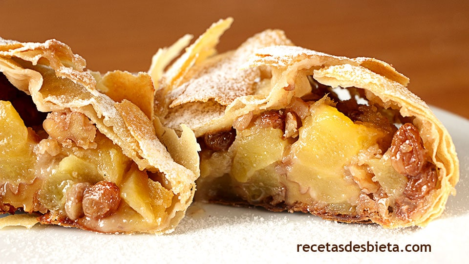

Apple Strudel

Description
Homemade dough and filling make this apple strudel worth the work.
This is a real holiday treat and my personal favorite!. Serves 12.
Ingredients
- 3 cups all-purpose flour
- 1 egg, beaten
- 1 cup lukewarm water
- 1 teaspoon white sugar
- 1 teaspoon lard, melted
- 1 pinch salt
- 1 ½ cups butter, melted
- 1 cup toasted bread crumbs
- 1 cup ground walnuts
- 3 ½ pounds apples - peeled, cored and thinly sliced
- ¾ cup raisins
- 1 teaspoon ground cinnamon
- 1 ¾ cups white sugar
Steps
-
Sift all-purpose flour into a large bowl. Mix in egg, water, white
sugar, lard and salt. Knead until soft and smooth. Lightly brush with
approximately 1 tablespoon butter. Cover with a towel and set aside
1 hour.
-
Mix bread crumbs and 3/4 cup butter in a medium bowl. Mix in ground
walnuts, apples, raisins, cinnamon and sugar.
-
Preheat oven to 375 degrees F (190 degrees C). Lightly butter a
medium baking dish.
-
Spread a clean tablecloth or cotton sheet on a large work surface
and dust with flour. Gently stretch the dough into a large, very thin
rectangle as thin as tissue paper. Cut away thick edges. Sprinkle with
approximately 1/2 cup melted butter. Spread bread crumb mixture across
the dough, leaving a two inch border on all sides. Fold one end of the
dough over the filling, then roll dough to form strudel. Cut so that
it will fit the baking dish.
-
Place strudel in baking dish and brush with remaining butter. Bake
in the preheated oven until golden brown and apples are tender,
about 1 hour.